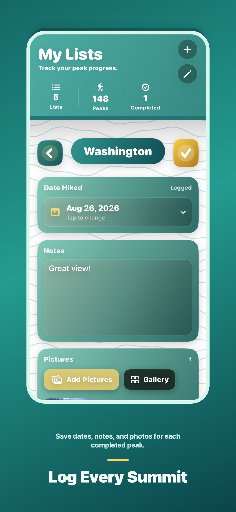
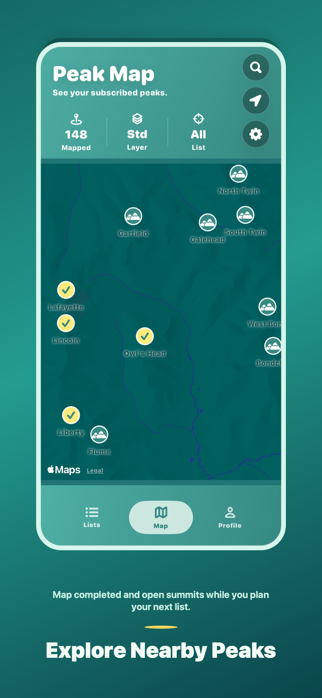
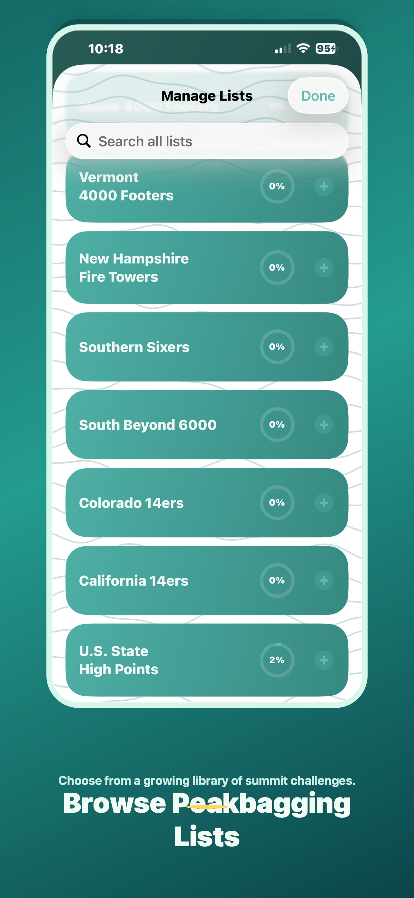
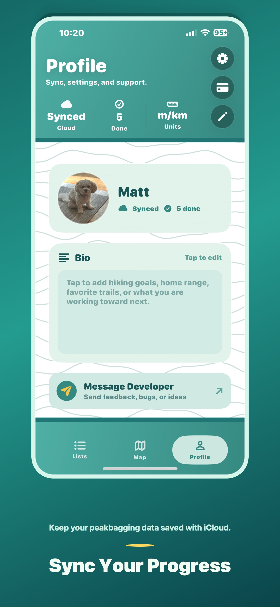

✓
Track List Progress
Follow summit challenges like the NH 48, Northeast 111, Colorado 14ers, state high points, and more.
PeakLog helps hikers organize peakbagging lists, log completed summits, explore nearby peaks, and keep progress synced when mountains appear across multiple challenges.
Less spreadsheet wrangling, more time planning the next summit.
Follow summit challenges like the NH 48, Northeast 111, Colorado 14ers, state high points, and more.
When one mountain appears on multiple lists, PeakLog keeps that completion connected everywhere.
Search, filter, and browse peaks geographically so you can see what is nearby and what is still open.
Add completion dates, hike notes, and photos to build a summit history that feels personal.
Keep your progress saved and available across your Apple devices when iCloud is enabled.
Ask for new lists, report bugs, or suggest features from inside the app.
Track progress, log hikes, browse list libraries, and map peaks without turning your peakbagging into homework.




PeakLog is available on iPhone for hikers who want a focused peakbagging tracker.